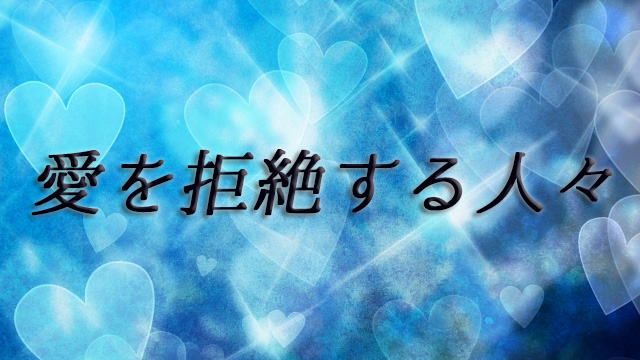

自分の身に良いことが起こる。次々と幸運が舞い込む。欲しかったものが手に入ったり願っていたことが叶う、そんな「良きこと」を拒絶する人がいる。
常識的に考えれば誰でも幸運や願望実現を望ましいものと思うはずだが、自分はそれに値しないと感じて受け取ろうとしない。あるいは受け取ることを躊躇する人がいるのだ。
そういう人の中には、他人に与えてばかりで自分を後回しにし結果として自己犠牲を強いられている人もいる。いわゆる「受け取り下手」な人たちである。
実はこういう人は意外に多い。
他者を優先して自分を後回しにする。自己犠牲の精神を発揮する。そう聞くと良い人に思えるが悪く言えば自己肯定感の低い人ともいえる。
幼いときから「自己中心的はダメ」「自分のことばかり考えないで他人（ひと）の気持ちになりなさい」と言われ続けたせいかも知れない。あるいは周囲の愛情に恵まれず我慢を強いられてきたのかも知れない。いずれにせよ「受け取り下手」な人に違いない。
たとえば会社などでも優秀で努力家なのに自己肯定感の乏しい人がいる。こちらが「とても良くやってくれているね」とホメたり昇進を打診すると、決まって「いえいえ、私なんかまだまだです。」と厚意を受け取ってくれない。
何かせっかくプレゼントを持って訪問したのに玄関先でピシャリと扉を閉められたような気になる。拒絶するのだ。
じゃ、こういう人はホメられたり認められたくないのか。気にかけず放っておいて欲しいのかといえば、本心はそうではないから厄介なのだ。
自分の努力を内心では人一倍認めて欲しいと思っていたりする。「だったら素直に受け取ろうよ！」と言いたくなるが、彼らにはそれができないのだ。従っていつも不利な状況や理不尽な目に合ってしまう。そして「やっぱり自分なんか…」という想いに陥る。
こうしたループにはまり続ける人は、それが自分のあり方や自己肯定感の低さに起因していることに気づかない。
本来「根の優しい人たち」だけにこれはとても残念に思う。
自分の許可したものが現実化する
一方これとは反対に何をやっても幸運に恵まれているかのように見える人もいる。問題やトラブルも巧みに解決し、人間関係もスムースに運んでいる、皆からうらやましがられるような人だ。あなたの周囲にもいるかも知れない。
こういう人は「受け取り上手」な人だ。他人の手助けや親切に対しても喜んで感謝して受け取ることができる。なのでますます幸運が舞い込む。自分がそれ（幸運）に値しないなどとは考えもしない。
一体どちらが幸福なのかといえばもちろん後者だ。自己犠牲で幸せになることはできない。
受け取り下手な人に覚えておいて欲しいこと。それは自分が満たされていないと他者を満たすことはできないし、自分が愛のエネルギーに満たされていなければ周りに愛を与えることもできないということだ。自分の持っていないものは人に与えることはできない。だからまず自分が幸せになること。何より自分を満たすことを優先すべきだ。自分をないがしろにし、他者の顔色を窺い自己を犠牲にすることで他者から認めてもらおうとする態度とはキッパリと手を切ることだ。
それが難しいと言うなら「自分は受け取るに値しない人間だというのは本当なのか」「苦しまなければ認めてもらえないというのは本当なのか」「人生のどこかで単にそう信じ込まされただけではないか」と、自分の信念（観点）を疑ってみて欲しい。
その信念が緩むにつれて人生の様相は一変する。なぜなら受け取ることを許可したからだ。実は人は自分に「受け取って良い」と許可した分しか受け取れない。
逆にいうと、今自分の周りを見回してみてそこにあるものが許可したものであり、望んでいるのに手に入っていないものがあるなら、それは許可していないということになる。
だから思い切って自分に許可を与えること。「自分は受け取って良いのだ」と自分に許可を出すことだ。そのためには日頃からもっと自分を認め、愛し尊重すること。もっと敬うことが大事だ。他人に分け与えようとしたり他人を愛そうとする前に、まず自分を大切にし愛すること。先にも言ったように自分にないものは人に与えることはできない。
一見すると、他者を優先し自己犠牲的に振る舞う人のほうが他人を大事に扱っているようだが実際は違う。自己犠牲という代償を支払って人から愛を得ようとしている時点で、それは取引であり条件つきの愛ということになる。「自分はこれだけガンバッた（尽くした）のだから…」という思いがある限り、人生は恨みに満ちたものになる。
そうしてついには「受け取る」こと自体を拒絶してしまうのだ。
自らの輝きで周囲を照らす
ここまで読んできて「自分は別に幸運を拒絶してるつもりはないが…」と感じる人もいるかも知れない。しかし、そういう人でも意外と根底では受け取ろうとしていないことがある。たとえばたまに良いことが起こっても「良いことばかり続かないから」と言い聞かせたり、お金や恋人を得ても失う不安に脅かされているのなら、それは受け取ろうとしていないのと同じだ。
もし、あなたが「受け取り下手」かどうか知りたいのなら以下のような信念あるいは行動パターンをもっていないかチェックして欲しい。
「他人から親切や恩義を受けるとすぐお返ししたくなる」
「ホメられ持ち上げられると居心地が悪くなる」
「自分を愛するのは利己的だと感じる」
「苦しんだり自分を犠牲にしないと認めてもらえない気がする」
「人にノーと言えない」
「正当な報酬であってもお金を要求したりもらうことに罪悪感を感じる」
「人に迷惑をかけることがいちばん悪いことだと信じている」
「他人の役に立ったり奉仕することに喜びを感じる」
「幸せや幸運はいつまでも続かない気がする」
「うまく行かないことがあると自分が悪いと思う」
これらのうち３つ以上に該当するならあなたは「受け取り下手」の可能性が大だ。すぐにその信念から自分を解放してあげることだ。そして心の中でくり返す自己批判を止めもっと自分を尊重し、自分に優しくして欲しい。「自分は○○に値しない」というのは人生のどこかで信じ込まされた誤った観念に過ぎない。
くり返すが、自分が幸せであれば周囲も幸せになる。自分を愛すれば周囲から愛される。この世はすべてそのような循環により成り立っている。つまりあなたが幸せであれば世界もハッピーとなり、あなたが愛であれば世界も祝福の循環を起こす。
もし人生がうまく行かない、不幸だと感じているならあなたが循環を止めているからに他ならない。自分を小さく制限する考えから離れて大胆に受け取る許可を下し自分を尊重して欲しい。そうすれば循環の歯車は音を立てて回転し始めるだろう。現実世界の「良きこと」はすべてこの循環する愛が形となって現われたものであるからだ。
そのためにはまずあなた自らが輝くこと。自ら循環の波を起こすことだ。
そのときあなたもあなたの周囲も光輝くだろう。
あなたが受け取り上手になったからだ。